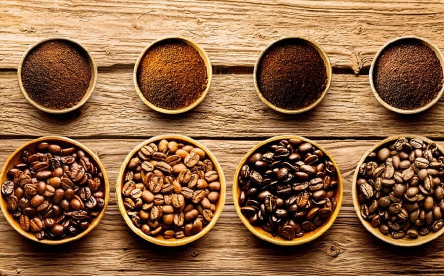

Một số loại cà phê phổ biến trên thế giới

-
Cà phê espresso được pha chế bằng cách dùng nước nóng nén dưới áp suất cao (khoảng 9 đến 10 bar) qua bột cà phê được xay rất nhuyễn.
Pha chế bằng phương pháp này cà phê sẽ rất đậm và trên mặt có một lớp bọt màu nâu (crema) đóng phần quan trọng trong việc tạo hương
thơm cho cà phê. Cà phê espresso thường được uống bằng tách dầy có hâm nóng trước, dung tích vào khoảng 40 ml và có hoặc không pha đường
tùy theo khẩu vị. Cà phê espresso thường được phục vụ kèm theo một ly nước.
-
Cà phê cappuccino là một cách uống cà phê của Ý. Một cà phê cappuccino bao gồm ba phần đều nhau: cà phê espresso pha với một lượng nước gấp đôi
(espresso lungo), sữa nóng và sữa sủi bọt. Để hoàn thiện khẩu vị, người ta thường rải lên trên tách cà phê cappuccino một ít bột ca cao và/hay bột quế.
Trong các quán cà phê ở Ý, người đứng bán ở bar (barista) thường dùng khuông hay dùng thìa và bằng cách khuấy điệu nghệ trong lúc rắc bột để tạo thành
các hình nghệ thuật (hình trái tim, đám mây, bướm,...).
-
Irish coffee(theo tiếng Anh nghĩa là "cà phê theo kiểu của Ireland") là loại đồ uống nóng có pha rượu whisky đặc trưng của Ireland.
-
Latte macchiatolà một loại đồ uống nóng rất được ưa chuộng. Thành phần của nó gồm có cà phê espresso và sữa. Về cơ bản thì latte macchiatio
giống như cà phê sữa, nhưng lượng sữa nhiều hơn. Ở Ý ban đầu loại cà phê này được làm riêng cho trẻ em để chúng cũng được uống "cà phê" như người lớn,
vì thế mà lượng caffein trong latte macchiato rất ít. Dần dần người lớn cũng mê loại đồ uống này.